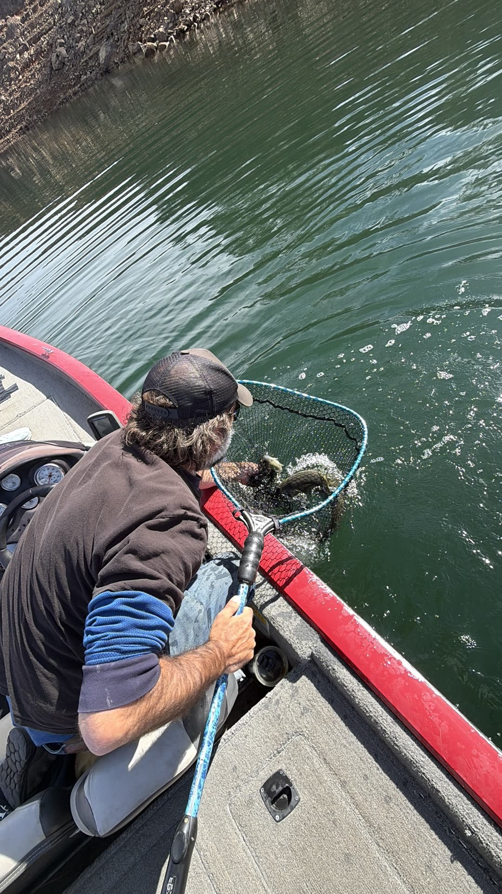

The Net Job
Official Account
At approximately 10:40 a.m., on a glass-calm morning on Lake McClure, Arjuna Farnsworth made what witnesses describe as "a cast." Working a 5-inch Hawg Hunter × Baitsanity Finesse Minnow (Threadfin Shad, 5/8 oz) along a rocky point, he felt a "thump," set the hook with the authority of a man who has watched several YouTube videos, and announced to the boat: "That's a good one."
It was not a good one. It was a squawfish.
The fight lasted an estimated 40 seconds, during which Arjuna called for the net twice, once politely. The fish was landed, photographed, briefly admired by no one, and released to go eat more bass fry.
Arjuna then rebaited with the same lure. Because, in his words, "it's clearly working."
*Certified by Arjuna, who held it and said "that's gotta be close to four."
From the Angler
"People are going to say it's a squawfish. And technically, legally, biologically, it is a squawfish. But look at the shoulders on that thing." — Arjuna Farnsworth
"The Hawg Hunter is named for what it hunts. I didn't name it. I just fish it. If the hawgs don't show up, that's on the hawgs." — Arjuna Farnsworth
"I'm not going to apologize for catching fish. Some guys in this boat caught zero fish. I caught one fish. Math is math." — Arjuna Farnsworth, to the boat
"It hit it like a bass. It fought like a bass. It just… wasn't a bass. That's a detail." — Arjuna Farnsworth
"Do you know how hard it is to get a squawfish to eat a $24 bait? Those fish have options." — Arjuna Farnsworth, moments before casting to the same spot
From the Guide
"In fifteen years on these lakes I have never seen a client commit to a squawfish like that. The hookset, the net call, the photo. Full send. I respect it. I don't understand it, but I respect it." — John Liechty, Xperience Fishing Guide Service
"I told him to throw the finesse minnow on the point because the spots were stacked up there. He did exactly what I said. Then a squawfish intercepted it. That's not a guide problem. That's a squawfish problem." — John Liechty
"Honestly, 3 lb 11 oz is a legit squawfish. If the ISGFA was real, he'd have a shot." — John Liechty
"He asked me if he should get it mounted. I told him the taxidermist would need to see a bass first for comparison." — John Liechty
From the Boat
"We're never going to let this go. Ever. That's the whole point of this website." — Management
ISGFA Line-Class Records
Sacramento pikeminnow (squawfish), swimbait division. The ISGFA recognizes only fish caught on baits that were clearly intended for a different species.
| Line class | Weight | Angler | Water | Bait | Status |
|---|---|---|---|---|---|
| 4 lb | 1 lb 9 oz | D. Ortega | Don Pedro | Keitech 3.8 | Certified |
| 6 lb | 2 lb 2 oz | M. Villanueva | New Melones | Megabass Magdraft | Certified |
| 8 lb | 2 lb 14 oz | T. Brannigan | Lake Oroville | Huddleston 68 | Certified |
| 10 lb | 3 lb 4 oz | K. Sato | Lake McClure | Hawg Hunter Magnum Trout | Certified |
| 12 lb | 3 lb 11 oz | A. Farnsworth | Lake McClure | Hawg Hunter × Baitsanity Finesse Minnow | Pending |
| 14 lb | 3 lb 6 oz | R. Delgado | Folsom Lake | 6th Sense Flow Glider | Certified |
| 16 lb | 4 lb 1 oz | "Big Pete" | Clear Lake | Deps Slide Swimmer 250 | Certified |
| 20 lb | 4 lb 9 oz | Unknown (left boat) | Shasta | Roman Made Mother | Disputed |
| All-tackle | 5 lb 2 oz | C. Nakamura | Lake McClure | Live crawdad (disqualified, swimbait div.) | Certified |
Previous 12-lb record: 3 lb 2 oz, J. Whitfield, New Hogan, 2019, on a Savage Gear Line Thru Trout. Mr. Whitfield has been notified and reportedly "doesn't care."
Pending Application · Case #2026-SQ-0411
Species: Sacramento pikeminnow (squawfish)
Weight: 3 lb 11 oz (angler estimate; scale "was in the truck")
Length / girth: 21.5″ / 11″
Line: 12-lb fluorocarbon
Bait: Hawg Hunter × Baitsanity Simplebait Finesse Minnow, 5″, 5/8 oz, Threadfin Shad
Rod/reel: Something expensive he just bought
Witnesses: 2 (both laughing)
Guide: John Liechty, Xperience Fishing Guide Service
Photo/video: Submitted (see The Catch)
Committee note: Application is complete except for the weight, the scale, a measuring board, a witness statement that isn't a group text, and a species ID from the angler that doesn't include the word "basically."
Squawfish on Swimbaits, 2026
Catch data from the ISGFA Northern California Squawfish Swimbait Survey (n = 1 boat, 1 guy, 1 squawfish, extrapolated).
Squawfish caught per 100 swimbait casts, by lake
Squawfish conversion rate, by swimbait
| Swimbait | Casts logged | Bass | Squawfish | Squaw % |
|---|---|---|---|---|
| Keitech Swing Impact 3.8 | 4,210 | 388 | 61 | 13.6% |
| Megabass Magdraft 6″ | 2,870 | 142 | 39 | 21.5% |
| Huddleston 68 | 1,930 | 51 | 22 | 30.1% |
| Hawg Hunter Magnum Trout | 1,104 | 37 | 26 | 41.3% |
| Hawg Hunter × Baitsanity Finesse Minnow | 1 | 0 | 1 | 100% |
Sample size for the Finesse Minnow row is small but, statistically speaking, perfect.
What the squawfish were doing when caught
Angler reaction on species ID (n = 212)
| Reaction | Share | Avg. time to acceptance |
|---|---|---|
| "Dang it." Unhooks, releases. | 71% | 0.5 sec |
| Quietly hopes nobody saw | 19% | 4 sec |
| Asks for a photo "for science" | 8% | 2 min |
| Calls for the net, demands weight, submits record application | 0.5% | Ongoing |
Season totals · McClure trip
The Bait
The Guide
Book Your Own Record Attempt
Want to chase a line-class squawfish of your own? Book a day with John, tie on a Hawg Hunter, and cast toward the point Arjuna was fishing. Ask for the "Farnsworth Special": one finesse minnow, one squawfish, one lifetime of commentary.